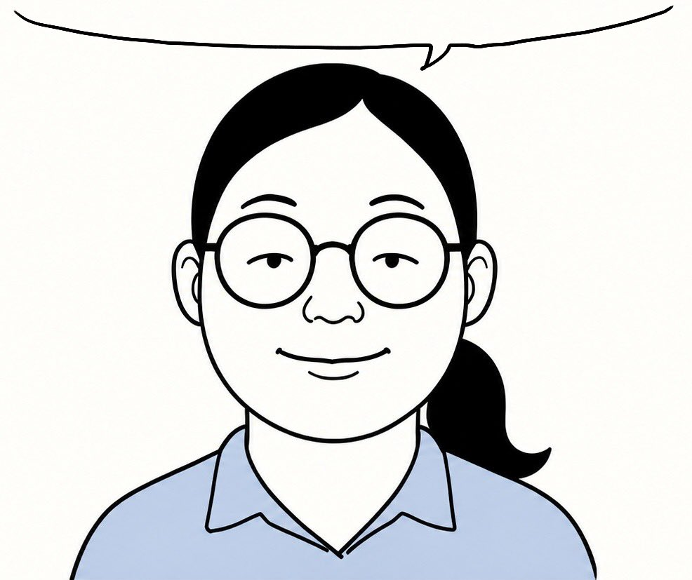

刚刚漫步在校园里，偶然听到几位大一新生闲谈，居然肆无忌惮地取笑时代少年团的艺人。那些戏谑调侃的话语传入耳中，实在让我心里无比难受！
难道当代部分大学生的素养就仅仅如此吗？！就算自己对这个团体不感兴趣，难道就可以随意拿艺人拿来打趣嘲弄吗？每一位艺人的舞台、作品，哪一个不是耗费 无数日夜拼搏换来的劳动成果！不喜欢完全可以保持无感，为什么要肆意出言调侃、恶意拉踩呢？！
一想到往后要和抱有这种态度的同学共处同一个校园，我真的感到无比唏嘘甚至羞耻！喜好本就各有不同，你可以不追捧，可以无感，这都无可厚非！可最基本的待人尊重去哪里了？！
在此我真心呼吁校园里的每一位同学！我们身为大学生，难道连最基础的包容都做不到吗？拒绝无端拉踩，拒绝随意取笑别人喜欢的艺人！你可以不认同他人的爱好，但请务必尊重别人付出的努力与汗水！尊重他人的喜好，不正是我们本该具备的基本素质吗？
难道当代部分大学生的素养就仅仅如此吗？！就算自己对这个团体不感兴趣，难道就可以随意拿艺人拿来打趣嘲弄吗？每一位艺人的舞台、作品，哪一个不是耗费 无数日夜拼搏换来的劳动成果！不喜欢完全可以保持无感，为什么要肆意出言调侃、恶意拉踩呢？！
一想到往后要和抱有这种态度的同学共处同一个校园，我真的感到无比唏嘘甚至羞耻！喜好本就各有不同，你可以不追捧，可以无感，这都无可厚非！可最基本的待人尊重去哪里了？！
在此我真心呼吁校园里的每一位同学！我们身为大学生，难道连最基础的包容都做不到吗？拒绝无端拉踩，拒绝随意取笑别人喜欢的艺人！你可以不认同他人的爱好，但请务必尊重别人付出的努力与汗水！尊重他人的喜好，不正是我们本该具备的基本素质吗？
